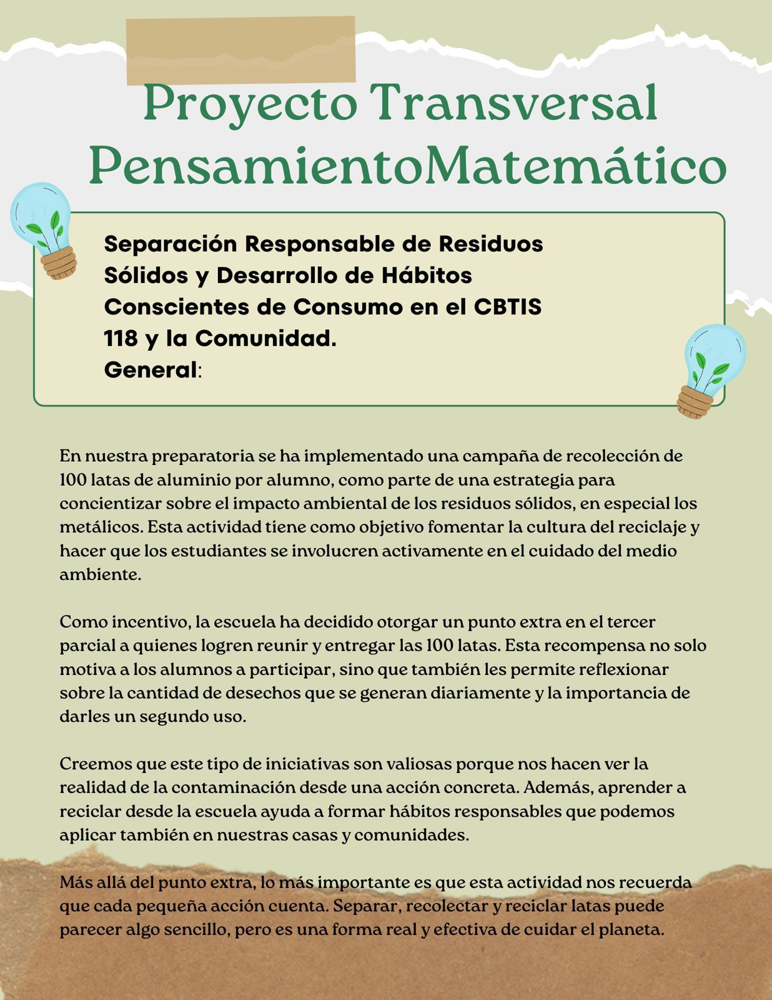

Separación Responsable de Residuos Sólidos
Tema: Desarrollo de hábitos conscientes de consumo en CBTis 118 y la comunidad.
Objetivo General: Promover la separación responsable de residuos sólidos y fomentar prácticas sostenibles.
Objetivos Específicos:
- Fomentar la educación ambiental en la comunidad.
- Implementar sistemas de separación y reciclaje en la institución.
- Concienciar sobre los beneficios del consumo responsable.
Número de Equipo: Equipo numero 2
Integrantes del Equipo:
Ivanna Camila Perez Vega
Cristina Osuna Avalos
Angel Gabriel Ojeda Perez
Cristian Garcia Perez
Emiliano Huerta Sanchez
Información Adicional
Organización del manejo de residuos a través de tablas e información visual:
| Tipo de Residuo | Como son ? |
|---|---|
| Orgánicos | Desechos de origen biológico, tanto vegetal como animal, que pueden descomponerse> en la tierra. |
| Reciclables | Son aquellos materiales que, después de ser utilizados, pueden ser transformados y reutilizados para crear nuevos productos |
| Peligrosos | Aquellos residuos que, debido a sus peligros intrínsecos, por ejemplo, ser corrosivos, reactivos, explosivos, tóxicos, inflamables, pueden causar daños o efectos indeseados a la salud.> |
- ✅ 1. Implementación de programas de separación de residuos desde el hogar y la escuela.
- ✅ 2. Promover el uso de materiales biodegradables y reutilizables en productos de consumo diario>
- ✅ 3. Crear talleres comunitarios de reciclaje creativo>
Pensamiento Matemático II
Recursos para el razonamiento lógico y matemático aplicado a problemas ambientales.
Más información: Visitar recurso
Lengua y Comunicación II
Reseña descriptiva y crítica. -Carteles, volantes, folletos (virtual y/o que no genere desecho).


Más información: Visitar recurso
Inglés II
Póster digital y físico. Rotular en inglés/ español los contenedores de residuos. Subir fotos de personas que ya separan los residuos sólidos. Evidencia fotográfica a través de una rúbrica .

Más información: Visitar recurso
Conservación de la Energía y su Interacción con la Materia
Estudio de estrategias de ahorro energético vinculadas al manejo de residuos.
Más información: Visitar recurso
Logística
Optimización del flujo de residuos mediante una planificación estructurada.
Más información: Visitar recurso
Entrevistas sobre el Sitio Web
Mira lo que opinan un amigo, un familiar y un docente sobre el proyecto:
Ciencias Sociales II
Análisis de los impactos sociales y culturales derivados del manejo responsable de residuos sólidos.
Más información: Visitar recurso